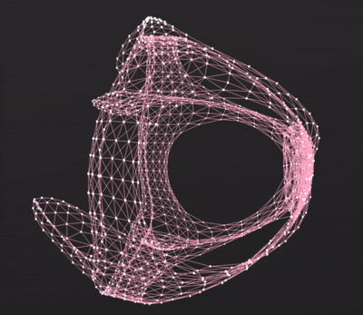

The Plebeian Graph Library (PGL) is a library designed to facilitate the visualization of large-scale network data (NetworkX-style graph plotting in JavaScript/TypeScript).
Used in production by:
- Narode — Reddit information-spread visualizer; PGL's first applied case. Renders forum cascades as graphs so the structure of how ideas propagate is legible at a glance.
- N-D-3 — a general-purpose graph toolkit: an outer-loop search over environment configurations driving inner-loop stochastic graph simulation, with the goal as a first-class part of the spec.
Leveraging the power of WebGL, PGL offers an efficient and interactive solution for visualizing network data in web browsers (Tested on Firefox, Edge and Chrome). Whether dealing with local datasets or data retrieved from APIs, PGL provides a versatile platform for conducting extensive network simulations, physical modeling, and immersive visualizations. With a rich set of features including graph condensation based on selected criteria, randomized edge pruning in highly connected graphs, and support for diverse visualization techniques like network diffusions and Kamada Kawai layouts, and edge bundling, PGL empowers users to gain valuable insights from complex network structures.

npm i plebeiangraphlibrary three); the npm build no longer bundles it, so your app and PGL share one instance. Build/pgl_standalone.js still bundles three.js for use without a bundler.color and alpha work in DrawTHREEGraphVertices / DrawTHREEGraphVerticesMutable.GenerateErdosReyni_n_p now produces the requested density and returns an initialized graph.It can be a bit confusing especially when working with Nodes/Edges/Vertices/Lines in this library (Also in general in working with graphs). Hence the terminology that I've followed here is as follows:
Lastly, there are a few helper classes like points and lines. Points are essentially vectors and are used for displacement and also for describing a place in relation to the global coordinate system. Line are an array of points that get translated into lines using one of the visualization methods. Points can have different visualizations like boxes, billboarded planes and cylinders etc.
Every PGL visualization follows the same five steps in this order. Getting the order wrong is the most common source of silent bugs.
Step 1 — Load or build a Graph
PGL.SampleData.LoadZKCSimulated() ← positions already baked in (fastest start)
PGL.SampleData.LoadZKC() ← raw graph, you must run a layout first
await GenerateErdosReyni_n_p(n, p) ← random graph (auto-initialized)
new Graph(...) + add_node/add_edge + await G.initialize() ← manual build
Step 2 — Create the renderer
new PGL.GraphDrawer.GraphDrawer3d({ graph, canvas, width, height })
Step 3 — Initialize (async — must complete before anything else)
await graph3d.init()
Step 4 — Draw visual elements and add them to the scene
const nodes = PGL.ThreeWrapper.DrawTHREEBoxBasedVertices(G, bounds, 0xffffff, 5)
graph3d.addVisElement(nodes)
const edges = PGL.ThreeWrapper.DrawTHREEGraphEdgesThick(G, bounds, 0xffafcc, 10)
graph3d.addVisElement(edges)
// If you need interaction, call enableInteraction() here — after addVisElement
graph3d.enableInteraction({ graph: G, onNodeClick: (d) => console.log(d) })
Step 5 — Start the animation loop
function animate() { requestAnimationFrame(animate); graph3d.rendercall(); }
animate()
Static vs. Mutable — choose before drawing:
| Scenario | Use these draw calls | Returns |
|---|---|---|
| Fixed layout (no animation needed) | DrawTHREEBoxBasedVertices, DrawTHREEGraphEdgesThick |
THREE.Group — pass directly to addVisElement |
| Live simulation, drag-to-reposition | DrawTHREEBoxBasedVerticesMutable, DrawTHREEGraphEdgesThinMutable |
{ group, updatePositions(), updateEdges() } — call updaters each frame |
Mutable variants return an updatePositions(posArray) and updateEdges() function. Call both each frame before rendercall().
When do I need to call await G.initialize()?
LoadZKCSimulated(), LoadZKC(), LoadDwt1005(), GenerateErdosReyni_n_p(), Graph.create() → auto-initialized, skip this stepadd_node / add_edge → you must call await G.initialize() yourself before drawing or running algorithmsThe documentation for the package is available at documentation. You can also generate API docs locally with:
npm run document
This writes TypeDoc output to the docs/ folder. API overview: the library exposes the following namespaces: Graph (add_node, add_edge, remove_node, remove_edge, get_position_map, apply_position_map, etc.), GraphMethods (BFS, Dijkstra, GraphDiameter, SelectSubgraph — note: Dijkstra returns hop-count distances via BFS for unweighted graphs), SampleData (LoadZKC, LoadZKCSimulated, LoadGraphFromEdgeListText for (sgd)²-style edge lists, LoadGraphFromObjText for OBJ meshes → graph + positions, LoadDwt1005 — lazy-loaded), Constructors (ConstructGraphNodeEdgesList), Drawing (SimulateKamadaKawai, DrawEdgeLines, DrawEdgeBundling, DisplaceEdgeInY, etc.), Geometry, Utilities, ThreeWrapper, GraphDrawer, Interaction (opt-in: enableInteraction, disableInteraction; types NodePickDetails, EdgePickDetails, InteractionOptions for click/hover/drag callbacks), Models (Erdos–Renyi), Hierarchy (clusterByDistance, clusterByStrategy for flow-map style clustering), Simulation (createKamadaKawai3D, createStressSGD3D — stress layout methods from (sgd)², Imperial), MatrixHelpers (matrixVectorMultiply, normalizeVector), and glMatrix (re-exported gl-matrix for vector/matrix math in the browser).
For time-based layout updates (e.g. in a requestAnimationFrame loop), use createKamadaKawai3D(graph, options) or createStressSGD3D(graph, options) (async). Both return an object with step(deltaTime), getPositions() (Float32Array), and getPositionMap(). The Stress SGD layout follows the (sgd)² reference implementation from Imperial (arXiv:1710.04626, IEEE TVCG, github.com/jxz12/s_gd2). Use DrawTHREEGraphVerticesMutable so you can call updatePositions(simulation.getPositions()) each frame without recreating geometry. For 3D layout that does not collapse to a line, pass initialPositions (e.g. from LoadGraphFromObjText) and use dimensions: 3. See Examples 9 (Kamada–Kawai live simulation), 11 (custom layout), 12 (Stress SGD live simulation), and 13 (Stress SGD 3D with Stanford Bunny mesh).
The library exports Point (class with x, y, z and translate()), PointLike ({ x: number; y: number; z: number }), NodeData (typed shape for node data; pos optional), and EdgeData (typed shape for edge data; ldata optional for line geometry). Use PointLike for plain objects; use new PGL.Point(x, y, z) when you need the class.
DrawTHREEGraphVertices, DrawTHREEGraphEdgesThin — create geometry once from the graph.DrawTHREEGraphVerticesMutable (and updatePositions()), DrawTHREEGraphEdgesThinMutable (and updateEdges()) — update geometry each frame for time-based simulation.DrawTHREEGraphEdgesThin, DrawThinEdgesFromEdgeMap and DrawTHREEGraphEdgesThinMutable return a Group holding a single THREE.LineSegments; DrawTHREEGraphEdgesThick and DrawThickEdgesFromEdgeMap return a Group holding a single mesh whose line width (in pixels) follows the canvas size. For a raycast hit on either, the edge ID is hit.object.userData.segmentEdgeIds[Math.floor(hit.index / 2)]; enableInteraction() does this for you.DrawTHREEGraphVertices(G, bounds, size, color, alpha) applies color to every vertex and treats alpha as opacity (1 = opaque). ChangeTheVertexColours / ResetVertexColors recolour these point-cloud vertices; box vertices (DrawTHREEBoxBasedVertices) use one colour for all boxes.Interaction is 100% opt-in. Call graph3d.enableInteraction(options) after adding visual elements. No interaction occurs unless you call it.
Options:
| Option | Type | Description |
|---|---|---|
graph |
Graph |
Required. Used to look up node/edge details for callbacks. |
onNodeClick |
(details: NodePickDetails) => void |
Fired when a node is clicked. |
onEdgeClick |
(details: EdgePickDetails) => void |
Fired when an edge is clicked. |
onNodeHover |
(details: NodePickDetails | null) => void |
Fired when pointer enters/leaves a node. null when leaving. |
onEdgeHover |
(details: EdgePickDetails | null) => void |
Fired when pointer enters/leaves an edge. null when leaving. |
hoverEnabled |
boolean |
Default true. Set false to disable hover callbacks. |
enableNodeDrag |
boolean |
Enable drag-to-reposition. Requires onNodeDrag. |
onNodeDrag |
(nodeId: number, newPosition: PointLike) => void |
Called each pointer move while dragging. Update graph and call updatePositions() / updateEdges(). |
controls |
OrbitControls |
Optional. Pass graph3d.controls to disable camera orbit during drag. Auto-passed by GraphDrawer. |
Callback payloads:
nodeId, data, neighbours, positionedgeId, start, end, dataExample — click and hover:
graph3d.enableInteraction({
graph: G,
onNodeClick: (d) => console.log("Node", d.nodeId, "neighbours:", d.neighbours),
onNodeHover: (d) => { if (d) showTooltip(d); else hideTooltip(); },
});
Example — drag to reposition (use mutable vertices and edges):
const { group, updatePositions } = PGL.ThreeWrapper.DrawTHREEBoxBasedVerticesMutable(G, 1, 0xffffff, 5);
const { group: edgeGroup, updateEdges } = PGL.ThreeWrapper.DrawTHREEGraphEdgesThinMutable(G, 1, 0xffafcc);
graph3d.addVisElement(group);
graph3d.addVisElement(edgeGroup);
graph3d.enableInteraction({
graph: G,
enableNodeDrag: true,
onNodeDrag: (nodeId, newPos) => {
const node = G.nodes.get(nodeId);
if (node?.data?.pos) {
node.data.pos.x = newPos.x;
node.data.pos.y = newPos.y;
node.data.pos.z = newPos.z;
}
const lmap = PGL.Drawing.DrawEdgeLinesDivisions(G, 1);
G.apply_edge_pos_maps(lmap);
updatePositions(G.get_position_map());
updateEdges();
},
});
Tips: Thin and thick edges are both pickable; the pick distance is 5 world units for edges and 10 for point-cloud vertices, so scale your graph (bounds) accordingly. Set graph3d.controls.autoRotate = false for interactive demos. See Examples 14 (click), 15 (hover), 16 (highlight neighbours), 17 (drag).
Hierarchy (clusterByDistance, clusterByStrategy) and Example 6 provide FlowmapBlue-style level-of-detail: cluster nodes by distance (e.g. KD-tree), merge nearby nodes into super-nodes, and simplify the graph for zoom-dependent detail. See Examples 5 (Hierarchy) and 6 (Flow map).
get_node_ids_order() returns a stable array of node IDs. get_adjacency_matrix() returns { matrix: Float32Array (row-major n×n), nodeIds }. Use matrixVectorMultiply(A, n, x, out) and normalizeVector(x) for power iteration or diffusion in the browser. The library re-exports glMatrix (vec3, mat4, etc.) so you can do full vector/matrix math without adding another dependency. Dense adjacency matrix is for small/medium graphs; for very large graphs use get_adjacency() (sparse). See Examples 10 and 11.
Apart from the graph class all the methods are stored in variables. These variables (For example SampleData) would have a function attached to it that returns a value, or in some cases you can pass in values to do stuff (like displacing the graph etc). I mostly did this for the sake of speed to develop — they will eventually be wrapped up as classes.
Existing network visualization libraries like NetworkX dictated the semantics of the graph library and borrowed some of the semantic ideas from three JS. The process is to define a Graph Object made of nodes and edges. Then modify this graph based on some set of properties. Then update the relevant settings. And lastly, to visualize the nodes, either as point clouds, boxes or cylinders, and to draw out the edges (bundled or not) lines. Here is an illustrated walkthrough of a simple set-up given a predefined set of “nodes” and “edges”.
The general idea of drawing a basic graph is outlined above. To recap all the basic steps:
// import the library
import * as PGL from "plebeiangraphlibrary";
async function createVisualization() {
// Load up the ZKC dataset
const zkcSimulated = await PGL.SampleData.LoadZKCSimulated();
// Attach the renderer to a div which is on an HTML that the script is linked too
const canvas = document.getElementById("displayCanvas");
// These are some basic options to set up a graph drawing object. Please refer to the documentation for more options
const graphDrawerOptions = {
graph: zkcSimulated,
width: 800,
height: 700,
canvas: canvas,
};
// Initialize a graph with these settings
const graph3d = new PGL.GraphDrawer.GraphDrawer3d(graphDrawerOptions);
await graph3d.init();
// Create the 3d elements for the graph
// first describe a global scaling factor
const bounds = 1;
// Create all the geometry associated with node elements
const nodeVisualElements = PGL.ThreeWrapper.DrawTHREEBoxBasedVertices(
zkcSimulated,
bounds,
0xffffff,
5
);
// add the node geometry to the scene
graph3d.addVisElement(nodeVisualElements);
// then create all the geometry associated with the edge elements
const edgeVisualElements = PGL.ThreeWrapper.DrawTHREEGraphEdgesThick(
zkcSimulated,
bounds,
0xffafcc,
0.02
);
// add the edge geometry to the scene
graph3d.addVisElement(edgeVisualElements);
// by default the camera revolves around the graph, trigger the animation call
function animate() {
requestAnimationFrame(animate);
graph3d.rendercall();
}
animate();
}
createVisualization();
Each recipe below is self-contained and runnable. They assume you have imported the library as import * as PGL from "plebeiangraphlibrary" and have a <canvas id="displayCanvas"> element in the page.
PGL supports the same space-separated edge list format used by (sgd)². Each line is nodeA nodeB, one edge per line.
const edgeListText = `
0 1
0 2
1 2
2 3
3 4
`.trim();
const G = await PGL.SampleData.LoadGraphFromEdgeListText(edgeListText);
// G is already initialized; every node starts at the origin.
// Run a layout before drawing (SimulateKamadaKawai is async):
const posMap = await PGL.Drawing.SimulateKamadaKawai(G, 50, 200);
G.apply_position_map(posMap);
const lmap = PGL.Drawing.DrawEdgeLinesDivisions(G, 1);
G.apply_edge_pos_maps(lmap);
import * as PGL from "plebeiangraphlibrary";
// Graph constructor requires explicit Maps — no-arg call leaves internals undefined
const G = new PGL.Graph(new Map(), new Map());
// add_node expects a _Node instance, not a plain object.
// _Node(data) stores data under node.data — pos is read from node.data.pos.
G.add_node(0, new PGL._Node({ pos: { x: 0, y: 0, z: 0 } }));
G.add_node(1, new PGL._Node({ pos: { x: 0, y: 0, z: 0 } }));
G.add_node(2, new PGL._Node({ pos: { x: 0, y: 0, z: 0 } }));
// add_edge updates node.neighbours on both ends immediately — adjacency is live.
G.add_edge(0, 1);
G.add_edge(1, 2);
G.add_edge(2, 0);
// initialize() rebuilds adjacency from scratch (with deduplication).
// Call it if you need a guaranteed-clean adjacency list — it is async.
await G.initialize();
// Now run a layout to compute real positions
const posMap = await PGL.Drawing.SimulateKamadaKawai(G, 100, 200);
G.apply_position_map(posMap);
const lmap = PGL.Drawing.DrawEdgeLinesDivisions(G, 1);
G.apply_edge_pos_maps(lmap);
// Then draw normally (steps 2–5 of the pipeline)
Per-node colours need point-cloud vertices (DrawTHREEGraphVertices or its Mutable variant). ChangeTheVertexColours accepts the returned Group or its .children[0]. Box vertices share one colour.
const G = await PGL.SampleData.LoadZKCSimulated();
// ... (pipeline steps 2–4) ...
const nodeGroup = PGL.ThreeWrapper.DrawTHREEGraphVertices(G, 1, 8, 0xffffff, 1);
graph3d.addVisElement(nodeGroup);
// Color specific nodes red
const mesh = nodeGroup.children[0];
const redNodeIds = [0, 3, 7, 12];
PGL.ThreeWrapper.ChangeTheVertexColours(mesh, redNodeIds, 0xff4444);
// To reset all colors back to white:
// PGL.ThreeWrapper.ResetVertexColors(mesh);
To color nodes by a data property (e.g. a "community" field you stored in node.data):
const communityColors = { 0: 0xff6b6b, 1: 0x4ecdc4, 2: 0xffe66d, 3: 0xa8e6cf };
for (const [community, color] of Object.entries(communityColors)) {
const ids = [...G.nodes.entries()]
.filter(([, n]) => n.data?.community === Number(community))
.map(([id]) => id);
PGL.ThreeWrapper.ChangeTheVertexColours(mesh, ids, color);
}
const G = await PGL.SampleData.LoadZKCSimulated();
const canvas = document.getElementById("displayCanvas");
const graph3d = new PGL.GraphDrawer.GraphDrawer3d({ graph: G, width: 800, height: 700, canvas });
await graph3d.init();
graph3d.controls.autoRotate = false; // disable rotation so hover is stable
const nodeGroup = PGL.ThreeWrapper.DrawTHREEBoxBasedVertices(G, 1, 0xffffff, 5);
graph3d.addVisElement(nodeGroup);
graph3d.addVisElement(PGL.ThreeWrapper.DrawTHREEGraphEdgesThick(G, 1, 0xffafcc, 10));
// Create a tooltip div in your HTML: <div id="tooltip" style="position:absolute;display:none;..."></div>
const tooltip = document.getElementById("tooltip");
// enableInteraction must come after addVisElement
graph3d.enableInteraction({
graph: G,
onNodeHover: (d) => {
if (d) {
tooltip.style.display = "block";
tooltip.textContent = `Node ${d.nodeId} — ${d.neighbours.length} neighbours`;
} else {
tooltip.style.display = "none";
}
},
});
function animate() { requestAnimationFrame(animate); graph3d.rendercall(); }
animate();
const G = await PGL.SampleData.LoadZKCSimulated();
const canvas = document.getElementById("displayCanvas");
const graph3d = new PGL.GraphDrawer.GraphDrawer3d({ graph: G, width: 800, height: 700, canvas });
await graph3d.init();
const nodeGroup = PGL.ThreeWrapper.DrawTHREEGraphVertices(G, 1, 8, 0xffffff, 1);
graph3d.addVisElement(nodeGroup);
graph3d.addVisElement(PGL.ThreeWrapper.DrawTHREEGraphEdgesThick(G, 1, 0x555555, 10));
const mesh = nodeGroup.children[0]; // point cloud with per-vertex colours
graph3d.enableInteraction({
graph: G,
onNodeClick: (d) => {
PGL.ThreeWrapper.ResetVertexColors(mesh); // clear previous highlight
PGL.ThreeWrapper.ChangeTheVertexColours(mesh, [d.nodeId], 0xffdd00); // clicked node = yellow
PGL.ThreeWrapper.ChangeTheVertexColours(mesh, d.neighbours, 0xff4444); // neighbours = red
},
});
function animate() { requestAnimationFrame(animate); graph3d.rendercall(); }
animate();
Use createKamadaKawai3D + mutable draw calls so the geometry updates each frame without recreating it.
const G = await PGL.SampleData.LoadDwt1005();
const simulation = PGL.createKamadaKawai3D(G, {
simulationBound: 500,
cohesionValue: 1,
repulsionValue: 1,
iterationsPerStep: 1,
});
// Apply initial positions so the draw calls have something to start from
G.apply_position_map(simulation.getPositionMap());
const lmap = PGL.Drawing.DrawEdgeLinesDivisions(G, 1);
G.apply_edge_pos_maps(lmap);
const canvas = document.getElementById("displayCanvas");
const graph3d = new PGL.GraphDrawer.GraphDrawer3d({ graph: G, width: 800, height: 700, canvas });
await graph3d.init();
// Mutable variants return updater functions — required for animation
const { group, updatePositions } = PGL.ThreeWrapper.DrawTHREEGraphVerticesMutable(G, 0.1, 1, 0xffffff, 1);
const { group: edgeGroup, updateEdges } = PGL.ThreeWrapper.DrawTHREEGraphEdgesThinMutable(G, 0.1, 0xffafcc);
graph3d.addVisElement(group);
graph3d.addVisElement(edgeGroup);
let lastTime = performance.now();
function animate() {
requestAnimationFrame(animate);
const now = performance.now();
simulation.step((now - lastTime) / 1000); // advance the layout
lastTime = now;
G.apply_position_map(simulation.getPositionMap());
const lmap = PGL.Drawing.DrawEdgeLinesDivisions(G, 1);
G.apply_edge_pos_maps(lmap);
updatePositions(simulation.getPositions()); // push new positions to GPU
updateEdges(); // recompute edge geometry
graph3d.rendercall();
}
animate();
These are the issues that trip up most new users and AI-generated code. Check this list first when something doesn't render or a callback never fires.
| Mistake | Symptom | Fix |
|---|---|---|
Using ChangeTheVertexColours on box vertices |
Colors don't change | Only point-cloud vertices (DrawTHREEGraphVertices / DrawTHREEGraphVerticesMutable) have per-vertex colours. Pass the returned Group or its .children[0]. Same for ResetVertexColors. |
| Iterating an edge Group's children to find edges | Only one child | Edges render as one object; use userData.segmentEdgeIds (see Drawing API) or enableInteraction() callbacks. |
Forgetting await G.initialize() after manually building a graph |
BFS, Dijkstra, and layout return empty/wrong results | Manual add_node / add_edge loops do not auto-initialize. Always call await G.initialize() before running any algorithm or draw call. |
Calling initialize() without await |
Race condition — adjacency lists are half-built | It is async. Always await G.initialize(). |
await PGL.Models.GenerateErdosReyni_n_p(n, p) missing |
Returns a Promise — using it without await gives a Promise, not a Graph |
Always await the call: const G = await PGL.Models.GenerateErdosReyni_n_p(n, p) |
new PGL.Graph() with no arguments |
this.nodes and this.edges are undefined — any access throws immediately |
Use new PGL.Graph(new Map(), new Map()) for an empty graph |
G.add_node(id, { pos: ... }) plain object |
Node has no .neighbours array — add_edge throws on first use |
Pass a _Node instance: G.add_node(id, new PGL._Node({ pos: ... })) |
Using DrawTHREEGraphVertices in a bundler project (Vite, Parcel, Webpack) |
Nodes invisible — texture ./Textures/Square.png fails to load silently |
Copy Examples/Textures/ to your project's public folder, or use DrawTHREEBoxBasedVertices which needs no texture. |
Calling enableInteraction() before addVisElement() |
Callbacks never fire | The interaction layer raycasts against objects already in the scene. Always add all visual elements first, then call enableInteraction(). |
Expecting Dijkstra to use edge weights |
Shortest path looks wrong on weighted graphs | Dijkstra in PGL returns hop counts (unweighted BFS). There is no weighted shortest-path solver — use hop counts or implement your own on top of get_adjacency(). |
| Using a static draw call then trying to update positions | Node positions don't move in the animation loop | Static variants (DrawTHREEBoxBasedVertices, DrawTHREEGraphEdgesThick) bake geometry at creation. For live updates use the Mutable variants and call updatePositions() / updateEdges() each frame. |
npm run test:unit (Vitest): graph model and algorithms, simulations, drawing and picking, loaders, hierarchy, and the build output (three.js stays external in the npm build).npx tsc --noEmit.npm run build && npm test renders test/test_1.html and compares the canvas with test/test_1.png (fails if more than 200 pixels differ). UPDATE_REFERENCE=1 npm test re-baselines. Set PUPPETEER_EXECUTABLE_PATH to use an installed Chrome.Install it from the npm repository. Note that this method needs a npm folder to be set up with a build tool like parcel to package the visualizations
npm i plebeiangraphlibrary three
There is a boiler plate example of this in repository
three (>= 0.170) is a peer dependency: the npm build imports it from your project instead of bundling it, so your app and PGL share one copy of three.js.
Or head over to the GitHub, download the pgl_standalone.js Builds file (three.js included) and then start using it as a standalone module without a bundler.
More examples are available at Examples. They cover layout (Kamada–Kawai, Stress SGD), edge bundling, flow maps, interaction (Examples 14–17: click, hover, neighbour highlight, drag-to-reposition), and dynamic graph growth (Example 18: add nodes iteratively while the live simulation adapts).
The plebeian Graph Library (PGL) is built on top of the ThreeJS library, seamlessly integrating its rich functionalities into a comprehensive and powerful toolset for large-scale graph data visualization. By leveraging the foundation provided by ThreeJS, PGL inherits a wide range of features, including advanced shading techniques, texture mapping capabilities, and much more. These powerful rendering capabilities enable PGL to create visually stunning and immersive graph visualizations, adding depth and realism to the representation of complex network structures. With its symbiotic relationship with ThreeJS, PGL empowers users to go beyond traditional graph visualizations, unlocking a world of possibilities for exploration and analysis.
A performance benchmark conducted against D3, an industry-standard visualization library, showcases PGL's capabilities. In this test involving approximately 5000 nodes and 200000 edges, D3-based SVG graphs only achieved a frame rate of 1.5 frames per second, bottoming at a frame every two seconds with a maximum of 12 frames per second. In contrast, PGL maintained a minimum of 52 frames per second and averaging 58 frames per second under similar conditions. This benchmark, performed on both Firefox and Chrome browsers (with negligible differences in performance) on a computer with an Nvidia RTX 2080 GPU, highlights PGL's superior performance and efficiency in rendering complex network visualizations. The benchmarking files are available under benchmarking for the D3 project and the PGL example can be accessed under Examples / 3_LargePointCloud.html
Contributions are welcome to the plebeian Graph Library (PGL)! Whether you're fixing a bug, adding a feature, improving documentation, or spreading the word, your contribution is valuable. Here's how you can get involved:
Reporting Issues: If you encounter any bugs or issues, please report them in the Issues section of our GitHub repository. Provide as much detail as you can, including steps to reproduce the issue.
Submitting Changes:
Seeking Support: If you have questions or need help integrating PGL into your project, feel free to reach out on the GitHub issues page, I shall be more than happy to help out there.
Improving Documentation: Good documentation is crucial for any project. If you see an area that needs improvement or have ideas for new content, don't hesitate to reach out and open an issue.
Also remember to check out the contributions file where there are more details on how to contribute to the project.
Remember to follow our Code of Conduct to ensure a welcoming and inclusive environment for everyone
PGL: If you use this library in your research, please cite:
Haldar, I. (2024). The plebeian Graph Library: A WebGL based network visualisation and diagnostics package. Journal of Open Source Software, 9(96), 5887. https://doi.org/10.21105/joss.05887
BibTeX entry is available in paper.bib as Haldar2024.
Stress-based layout (createStressSGD3D): The stress-minimization-by-SGD algorithm and schedule used in PGL are taken from the (sgd)² reference implementation (jxz12/s_gd2) from Imperial College London. The underlying method is from the paper: J. X. Zheng, S. Pawar, D. F. M. Goodman, Graph Drawing by Stochastic Gradient Descent, IEEE Transactions on Visualization and Computer Graphics, arXiv:1710.04626. Example graph data (e.g. football.txt) in the Stress SGD demo are from the same s_gd2 repository.
PGL: This library was sponsored by the Geometry Lab under the Laboratory for Design Technologies at the Graduate School of Design, Harvard University. Many thanks to Andrew Witt for guiding this project. This project was developed by Indrajeet Haldar.
Related project docs: CHEATSHEET · CHANGELOG · paper (JOSS publication source)